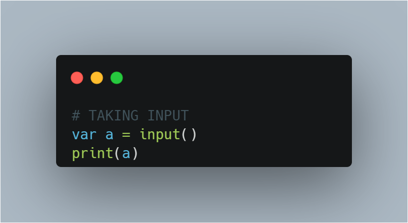
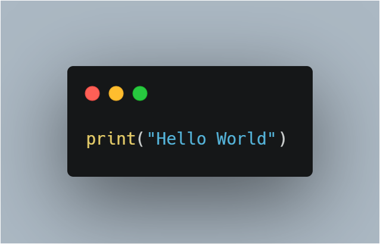
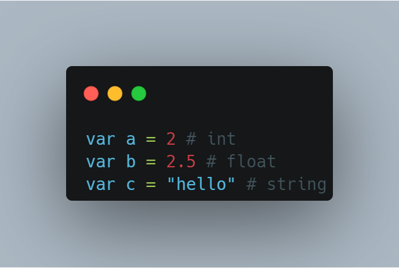
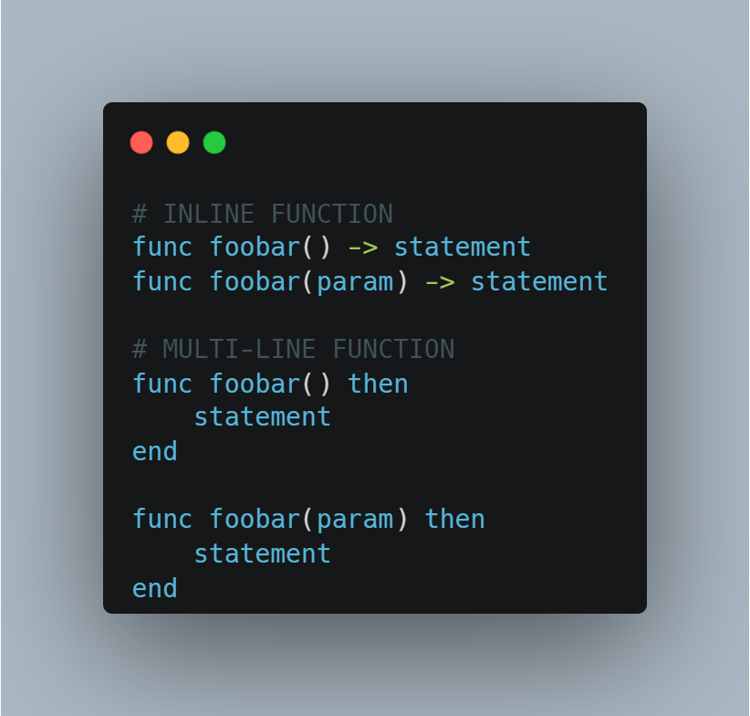
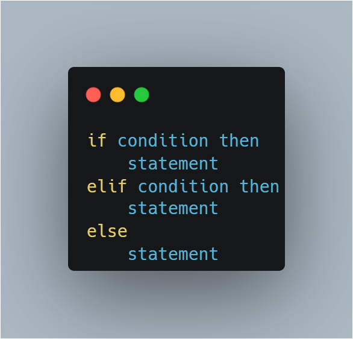
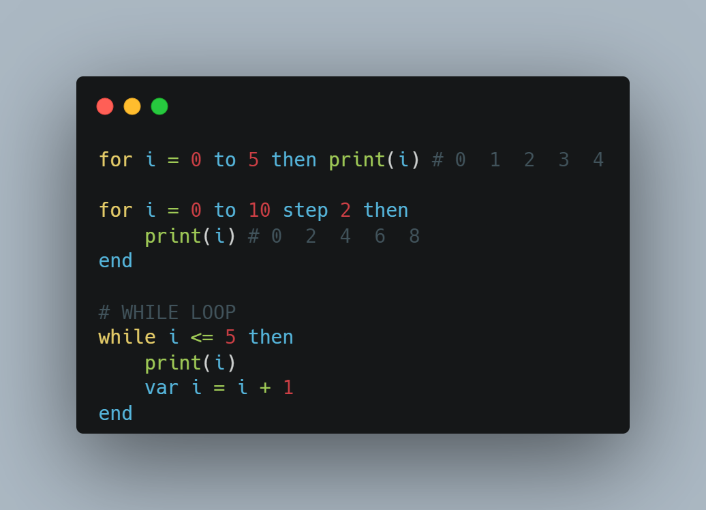

Editor:
Documentation:
Input can be taken in the following way :
To get the output you can use print command.
To declare variables we can use var for any type of data.
To use functions use keyword func and inline and multiline both functions are supported
In Basica we can perform following algebaric operations:

Following are used for comparison of values.

Basica support if , elif and else conditionals statement.
Here we have two types of loops namely For and While.
